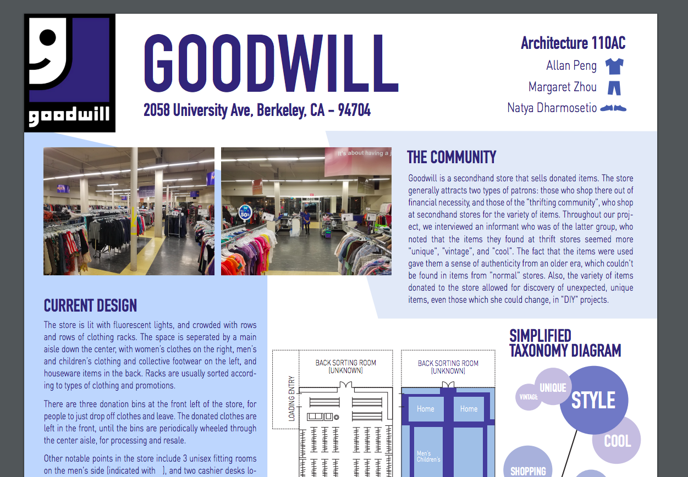

|
 In Fall 2016, we conducted an ethnographic survey of a local Goodwill second-hand store and proposed a redesign of the existing space. Through interviews, on-site surveys, various sketches of the current layout, and an extensive survey of research literature on related economic and sociological issues related to department stores and second-hand stores, we developed an understanding of the related community, and culture around second-hand stores. We proposed a re-design of the space, emphasizing discovery of new clothing items and a unisex floor layout, eliminating gender divisions of clothing. The proposal was selected to be presented at the Architecture 110 class at UC Berkeley, and was praised as “radical”, by renowned architectrue professor and ethnographic researcher Galen Cranz. You can check out our poster here |